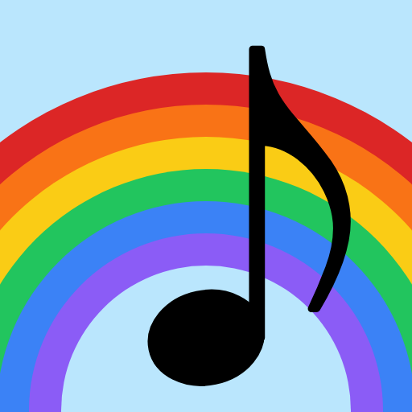

R&P MusicColored notes. Colored keys.\nLearn to read and play music.
Let's go! Free · runs in your browser · no installation neededEvery pitch has its own color to help you learn to read and play sheet music.
A glowing rainbow arcs over the note playing at the moment, so you can follow along without losing your place.
A colored keyboard at the bottom matches the notes on the staff so you can connect what you see and play.
A beat buddy of your choice keeps time so you can feel the rhythm.
The app plays the song for you — the rainbow tracker glides from note to note and the matching piano key lights up, so you can watch and hear how the song goes.
You play each note yourself — the app waits for the right key before moving on, so you can learn at your own pace.
No download needed.
Want it to feel like an app?
On iPad/iPhone tap Share → Add to Home Screen.
On Android, tap the menu → Install app.